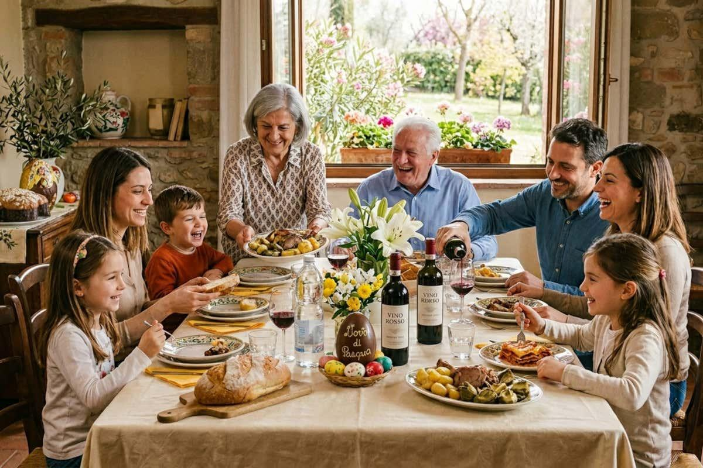
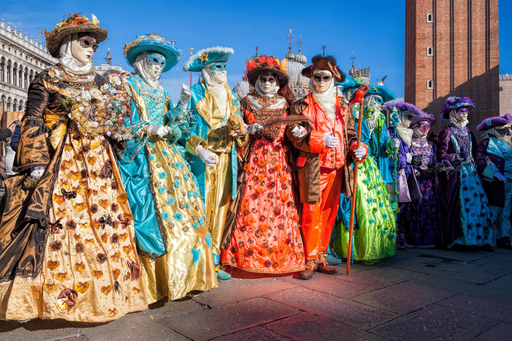
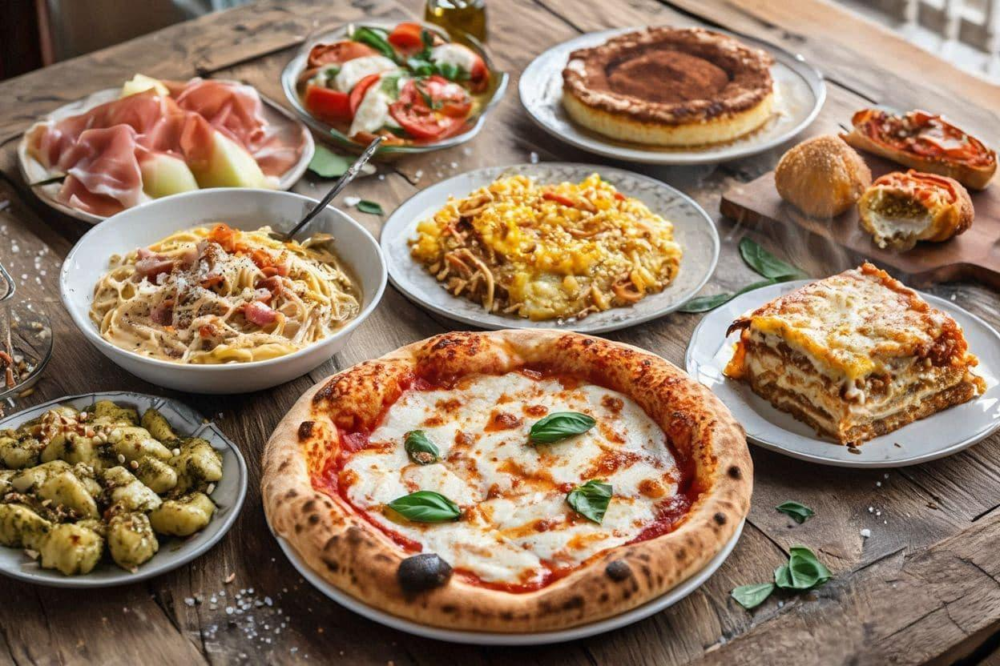
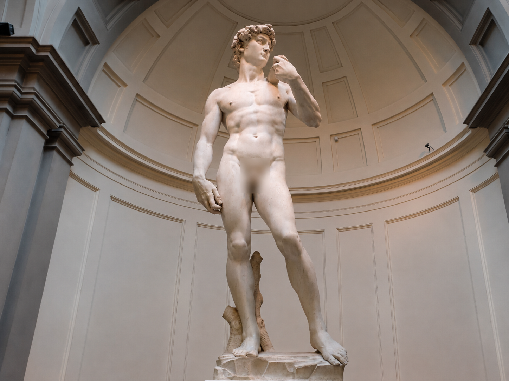
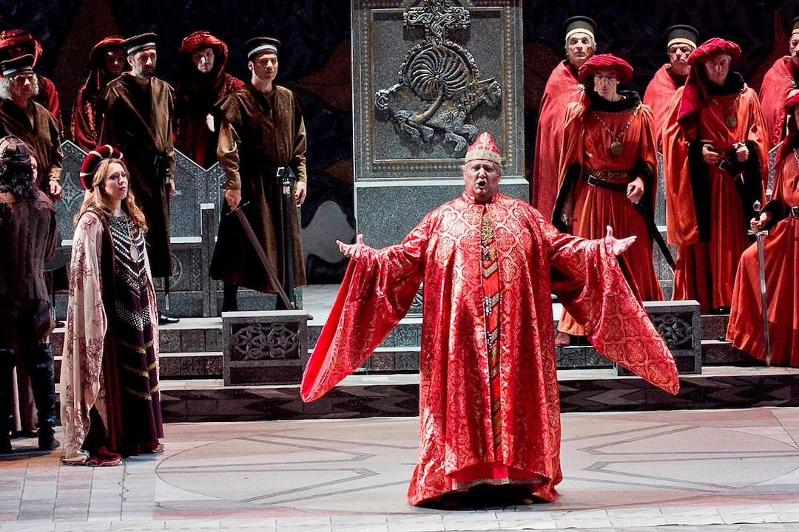
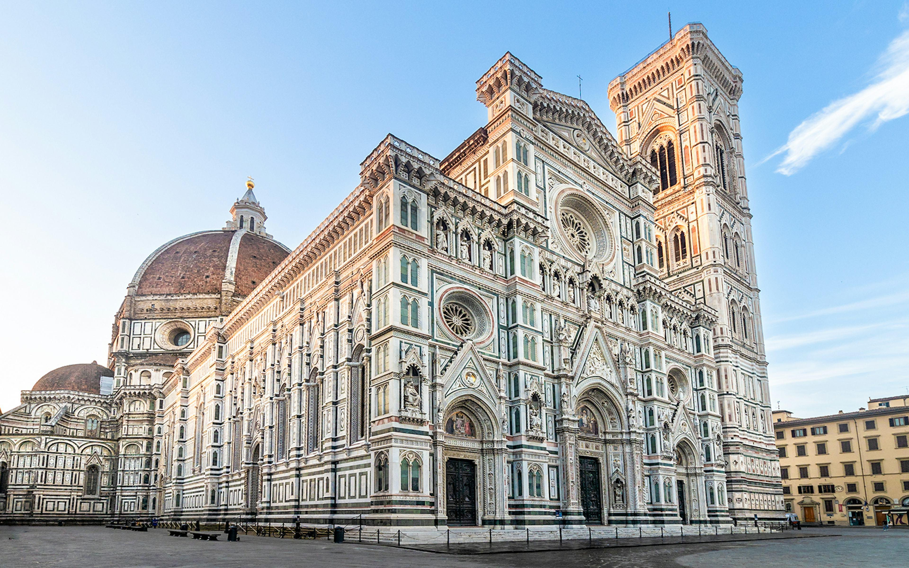
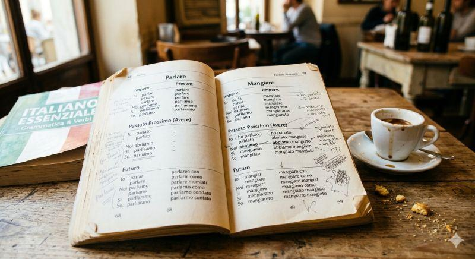
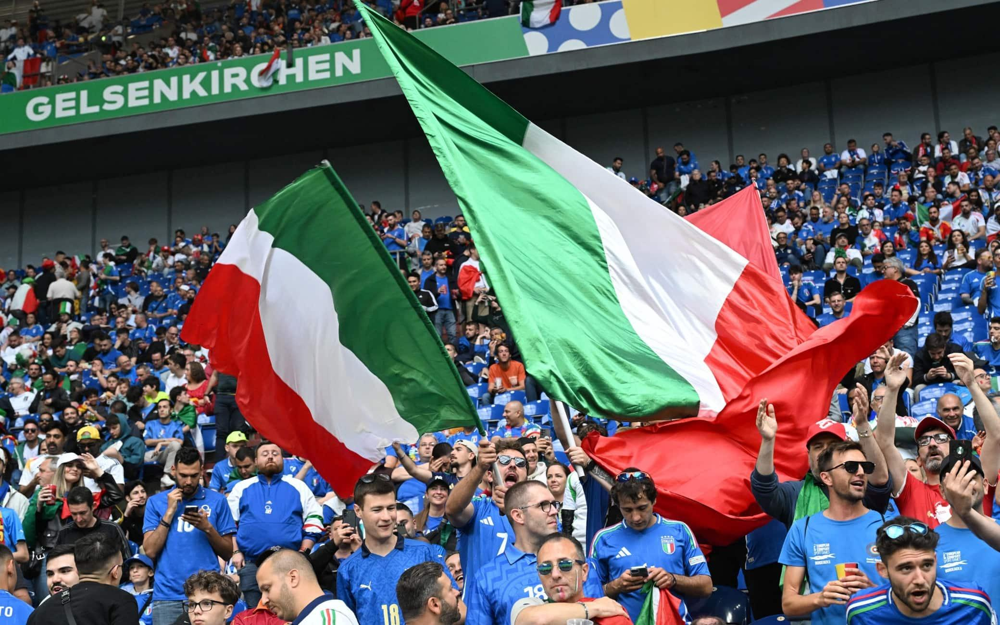
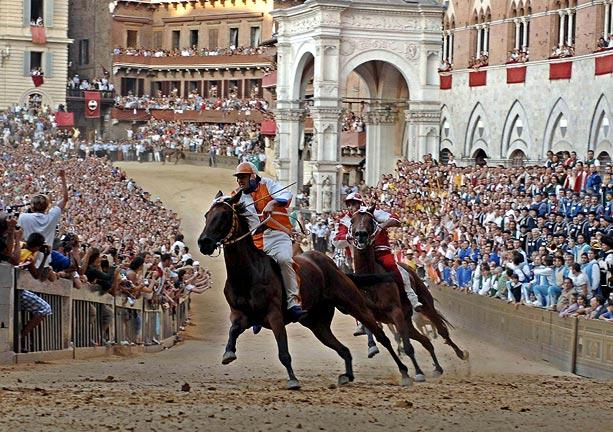

Venha descobrir a rica cultura italiana, conhecendo suas tradições, festas típicas, costumes e manifestações artísticas que tornam a Itália um país único e cheio de história.

Os encontros em família, as refeições compartilhadas e as tradições regionais fazem parte da vida cultural italiana. Muitos costumes são passados de geração em geração.

O Carnaval de Veneza é famoso por suas máscaras e fantasias. Outras festas locais celebram a história, os santos padroeiros e as tradições de cada cidade.

A culinária italiana é conhecida mundialmente por pratos como pizza, massas e risoto. Cada região possui receitas e ingredientes próprios.

A Itália possui uma grande herança artística, com pinturas, esculturas, arquitetura, ópera e música que influenciaram diversas partes do mundo.

A Itália tem uma forte tradição musical e é um dos países mais importantes na história da ópera. Também possui danças tradicionais, como a tarantela, conhecida por seu ritmo animado. A música italiana continua influenciando artistas de vários países.

A arquitetura italiana reúne construções de diferentes épocas, desde os monumentos do Império Romano até as grandes obras do Renascimento. O Coliseu, a Torre de Pisa e a Catedral de Florença são exemplos de lugares que atraem visitantes do mundo inteiro.
A Itália é reconhecida mundialmente pela moda e pelo design. Cidades como Milão são importantes centros de desfiles e tendências. Marcas italianas ficaram conhecidas pela criatividade, qualidade e cuidado com os detalhes em roupas, bolsas e acessórios.

O italiano é o idioma oficial do país e tem origem no latim. Algumas expressões conhecidas são "Ciao", usada para dizer oi ou tchau, "Grazie", que significa obrigado, e "Buongiorno", que significa bom dia. Existem também variações regionais na fala.

O futebol é muito popular na Itália e reúne torcedores de diferentes cidades e regiões. O país possui clubes tradicionais e uma seleção com grande história em competições internacionais. O automobilismo também tem destaque na cultura esportiva italiana.

Cada região italiana possui costumes, receitas, festas e celebrações próprias. Um exemplo é o Palio de Siena, uma corrida de cavalos ligada à história e às tradições dos bairros da cidade. Essa diversidade torna a cultura italiana ainda mais rica.